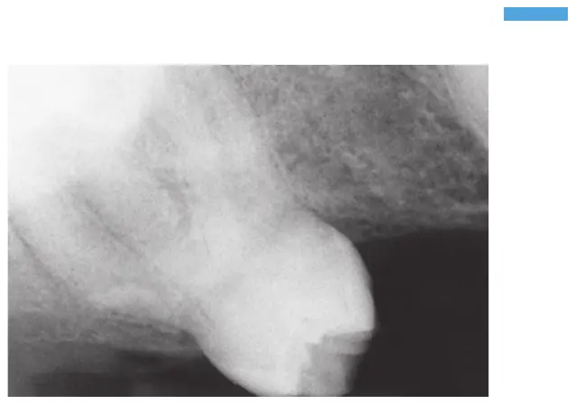
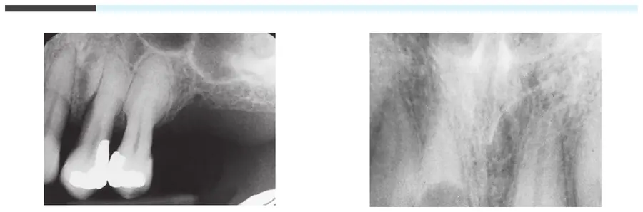

نسخه استخراجشده؛ ترجمه یا تأیید علمی انجام نشده است. وضعیت: captured
۱) دسترسی. اول ببین بیمار چقدر دهانش را باز میکند. محدودیت باز شدن، هم تزریق بیحسی و هم کشیدن معمول را مختل میکند. اگر باز شدن بهطور قابلتوجهی محدود است، به رویکرد جراحی بهجای الواتور و فورسپس فکر کن — که سداسیون عمیق یا بیهوشی عمومی میطلبد. و علت محدودیت را پیدا کن: محتملترینها تریسموس ناشی از عفونت اطراف عضلات جونده، اختلال TMJ، و فیبروز عضلانیاند.

بعد جایگاه دندان در قوس: دندان درستردیف دسترسی طبیعی برای الواتور و فورسپس دارد؛ دندان کراودد یا مالپوزیشن ممکن است اجازهی نشستن فورسپس معمول را ندهد. آنوقت یا فورسپس دیگری لازم است یا رویکرد جراحی.
۲) لقی. لقی بیشتر از نرمال معمولاً یعنی کشیدن ساده — ولی مدیریت بافت نرم پس از کشیدن ممکن است پیچیدهتر باشد. لقی کمتر از نرمال زنگ خطر است: به هایپرسمنتوز یا آنکیلوز ریشه فکر کن. آنکیلوز اغلب در مولر شیری باقیمانده و فرورفته دیده میشود، و گاهی در دندان نانوایتالی که سالها پیش اندو شده. اگر آنکیلوز را محتمل دانستی، از همان اول برای کشیدن جراحی برنامه بریز نه کشیدن با فورسپس.
۳) وضعیت تاج. پوسیدگی وسیع، آمالگام بزرگ، و دندان اندوشده (که دهیدراته و شکننده میشود و زیر نیرو خرد میشود) — هر سه احتمال له شدن تاج حین کشیدن را بالا میبرند.
پاسخ هر سه یکی است: دندان را تا حد ممکن الویت کن و فورسپس را تا حد ممکن آپیکالی بگذار تا بهجای تاج، بخش سالم ریشه را بگیری.
و دو نکتهی جانبی: جرم انبوه را پیش از کشیدن با اسکیلر یا اولتراسونیک بردار — هم جای درست نشستن فورسپس را میگیرد و هم جرم شکسته میتواند ساکت خالی را آلوده کند. و دندانهای مجاور را بسنج: اگر آمالگام بزرگ، روکش یا اندو دارند، الواتور را با نهایت احتیاط به کار ببر و پیش از عمل در فرایند رضایت آگاهانه به بیمار دربارهی احتمال آسیب به این ترمیمها بگو.
پریاپیکال دقیقترین و کاملترین اطلاعات را میدهد؛ پانورامیک پرکاربرد است ولی بیشترین فایدهاش برای دندان نهفته است نه دندان رویشیافته.

سه شرط که کلیشه را «قابل استفاده» میکند: اکسپوژر و کنتراست درست و نمایش کل تاج و ریشه بدون اعوجاج، کهنه نبودن — کلیشهی قدیمیتر از یک سال احتمالاً باید تکرار شود، و در دسترس بودن حین عمل، طوری که بدون قطع جراحی و بدون درآوردن دستکش بتوانی نگاهش کنی. «کلیشهای که گرفته شده ولی حین جراحی در دسترس نیست، ارزش محدودی دارد.»
الف) رابطه با ساختارهای حیاتی. در مولر بالا فاصلهی ریشهها تا کف سینوس ماگزیلاری: اگر فقط لایهی نازکی استخوان بینشان باشد، احتمال پرفوراسیون سینوس بالا میرود و ممکن است طرح به تکنیک جراحی باز با سکشن ریشههای مولر پیش از کشیدن تغییر کند.
در مولر پایین کانال آلوئولار تحتانی — در دندان رویشیافته بهندرت درگیر میشود ولی در نهفته باید رابطهاش سنجیده شود و CBCT اینجا اغلب کمک میکند. و کلیشهی پیش از کشیدن پرمولر پایین باید سوراخ منتال را نشان دهد.
ب) پیکربندی ریشه — بیشترین سهم را در تعیین سختی کار دارد.
ج) استخوان اطراف. استخوان رادیولوسنتتر یعنی کمتراکمتر و کشیدن آسانتر؛ استخوان رادیواوپک با شواهد استئیت متراکم یا اسکلروز، کشیدن را سختتر میکند. و پاتولوژی آپیکال را بگرد: رادیولوسنسی پریاپیکالِ گرانولوما یا کیست باید همزمان با جراحی برداشته شود.
نوع سؤال: ساخت کلمه · 3 خانه
حروف منبع: ا · ب · ز